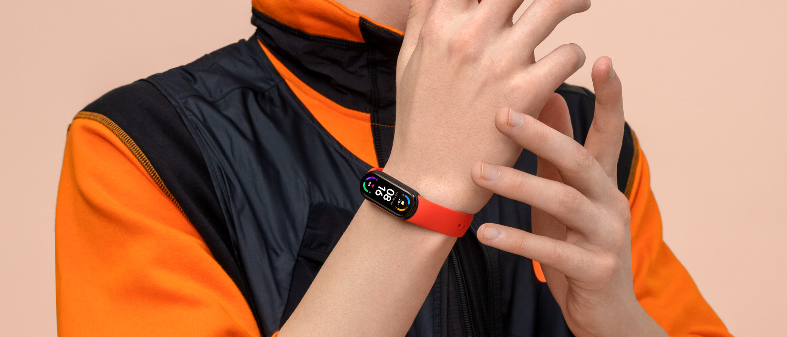

30 de moduri de fitness. Antrenor personal pe încheietura mâinii
Mi Smart Band 6 are 19 moduri noi de fitness, cum ar fi antrenamentul HIIT, baschet, box și zumba, iar acum oferă trei duzini de activități diferite din care să alegeți. Mai mult, în timpul exercițiului, pe ecran sunt afișate întotdeauna informații despre durata antrenamentului, numărul de calorii arse și ritmul cardiac, ceea ce face ca exercițiul să fie și mai eficient.
